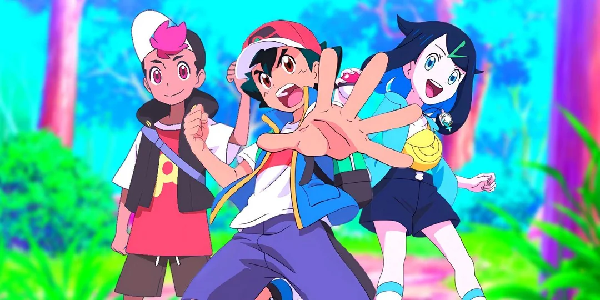

Sobre o anime
O anime Pokémon narra a jornada de treinadores, focando inicialmente em Ash Ketchum e seu Pikachu em busca de se tornarem Mestres Pokémon por diversas regiões. Ao longo de mais de 25 anos, a série destaca batalhas de ginásio, amizade e a captura de novas criaturas. Desde 2023, a história segue os novos protagonistas Liko e Roy em Pokémon Horizons.
Gerações
Estreou em 1997 no Japão.
Protagonista: Ash Ketchum (primeiras 25 temporadas).
Atual: Liko e Roy (Pokémon Horizons).
Cada geração se passa em uma região do universo, sendo elas:
1ª Geração - Kanto
2ª Geração - Johto
3ª Geração - Hoenn
4ª Geração - Sinnoh
5ª Geração - Unova
6ª Geração - Kalos
7ª Geração - Alola
8ª Geração - Galar
9ª Geração - Paldea
